Matematika I · Minggu 2
Fungsi dan Grafik
Bahasa untuk menuliskan hubungan
Mohammad Jamhuri · Teknik Sipil
Geser ke samping atau tekan panah untuk berpindah slide
Minggu lalu kita melihat sebuah balok yang melengkung karena dibebani.

Waktu itu saya bilang: hubungan antara x dan y ini namanya fungsi. Hari ini kita bahas apa maksudnya.
Dan kenapa gagasan sesederhana itu ternyata dipakai di hampir seluruh pekerjaan teknik.
Bagian satu
Apa itu fungsi?
Sebelum masuk ke definisi, mari lihat tiga hal yang sehari-hari dihadapi insinyur sipil.
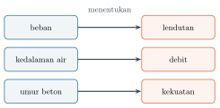
Ketiganya berpola sama. Ada sesuatu yang kita atur atau ketahui, dan ada sesuatu yang mengikuti darinya.
Kalau bebannya bertambah, lendutannya bertambah. Kalau airnya lebih dalam, debitnya lebih besar.
Hubungan semacam inilah yang disebut fungsi.
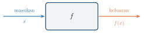
Bayangkan fungsi sebagai sebuah mesin. Masukkan sebuah nilai, keluar sebuah nilai.
Perhatikan dua kata itu: tepat satu. Di situlah seluruh maknanya.
Kenapa harus tepat satu? Kenapa tidak boleh dua?
Bayangkan Anda menghitung sebuah balok, lalu mendapat jawaban: dengan beban sebesar ini, lendutannya 8 milimeter.
Atau 30 milimeter.
Yang mana yang Anda pakai untuk memutuskan balok itu aman atau tidak?
Perhitungan yang memberi dua jawaban sama saja dengan tidak memberi jawaban.
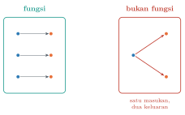
Jadi syarat “tepat satu” itu bukan aturan matematika yang dibuat-buat.
Itu syarat supaya hasil hitungan bisa dipakai untuk mengambil keputusan.
Bagian dua
Cara menuliskannya
Kalau setiap kali harus menulis “lendutan bergantung pada posisi di sepanjang balok”, kalimatnya kepanjangan.
Karena itu ada notasi.
Dibaca: y adalah fungsi dari x. Huruf f adalah nama fungsinya, seperti nama orang.
Kalau ada beberapa fungsi sekaligus, namanya dibedakan: f, g, h. Atau diberi nama yang berarti, seperti L(x) untuk lendutan dan Q(h) untuk debit.
Menamai fungsi sesuai maknanya sangat menolong ketika soalnya mulai panjang.
Lalu f(2) artinya apa?
Artinya: masukkan angka 2 ke dalam mesinnya, lalu lihat apa yang keluar.
Misalkan lendutan sebuah balok dinyatakan oleh
dengan x dalam meter dan L dalam milimeter.
Berapa lendutan di titik 4 meter dari tumpuan? Ganti setiap x dengan 4:
Jadi lendutannya 16 milimeter.
Perhatikan satu hal kecil yang sering terlewat: kita menulis 16 milimeter, bukan sekadar 16.
Angka tanpa satuan tidak berarti apa-apa dalam pekerjaan teknik.
Kesalahan yang paling sering terjadi di sini adalah menganggap f(x) berarti f dikali x.
Bukan. Kurung itu bukan perkalian, melainkan cara menunjukkan apa yang dimasukkan.
Bagian tiga
Batas yang masuk akal
Sekarang pertanyaan yang lebih menarik.
Untuk rumus lendutan tadi, bolehkah kita memasukkan x = −3?
Secara hitungan, boleh saja. Rumusnya tetap memberi jawaban.
Tetapi x itu posisi di sepanjang balok. Posisi negatif berarti di luar baloknya. Tidak ada artinya.
Himpunan nilai masukan yang boleh dipakai disebut daerah asal, atau domain.
Untuk balok sepanjang 6 meter, daerah asalnya adalah 0 ≤ x ≤ 6.
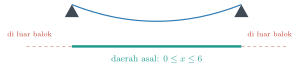
Rumusnya memang berlaku di mana-mana. Tetapi persoalannya hanya berlaku di sepanjang balok.
Inilah bedanya matematika di sekolah dan matematika untuk rekayasa.
Di sekolah, daerah asal ditentukan oleh rumusnya. Di lapangan, daerah asal ditentukan oleh benda yang sedang Anda hitung.
Meski begitu, rumusnya sendiri juga bisa punya larangan. Ada dua yang paling sering muncul.
Pertama, penyebut tidak boleh nol. Pada
nilai x = 3 terlarang, sebab pembagian dengan nol tidak terdefinisi.
Kedua, isi akar kuadrat tidak boleh negatif. Pada
yaitu rumus kecepatan air yang keluar dari lubang sedalam h, nilai h tidak boleh negatif.
Dan yang terakhir itu sekaligus masuk akal secara fisik: kedalaman air memang tidak mungkin negatif.
Seringkali larangan rumus dan larangan kenyataan kebetulan sejalan.
Bagian empat
Melihat fungsi sebagai gambar
Rumus memberi tahu kita nilai. Tetapi rumus saja sulit dibayangkan.
Karena itu fungsi digambar.
Caranya sederhana: setiap pasangan masukan dan keluaran menjadi satu titik pada bidang.
Masukan diukur mendatar, keluaran diukur tegak.
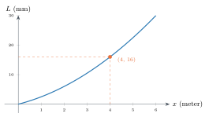
Titik jingga itu adalah hitungan kita tadi: pada 4 meter, lendutannya 16 milimeter.
Sekarang seluruh perilaku balok terlihat sekaligus, tidak perlu dihitung satu per satu.
Dari gambar itu kita langsung melihat hal yang tidak tampak dari rumusnya: lendutannya makin cepat bertambah ketika menjauh dari tumpuan.
Kurvanya tidak lurus, melainkan makin curam.
Inilah sebabnya insinyur hampir selalu menggambar.
Bukan karena tidak bisa menghitung, melainkan karena gambar memperlihatkan pola, sedangkan angka hanya memberi satu titik.
Sekarang, dari sebuah gambar, bagaimana kita tahu itu fungsi atau bukan?
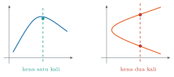
Tarik garis tegak di mana saja. Kalau ada garis yang memotong kurva lebih dari sekali, berarti bukan fungsi.
Alasannya persis seperti tadi: satu masukan memberi dua keluaran sekaligus.
Cara ini disebut uji garis tegak, dan hanya perlu sekali lihat untuk memakainya.
Bagian lima
Bentuk yang sering ditemui
Tidak semua fungsi perlu dihafal. Tetapi ada beberapa bentuk yang muncul berulang-ulang dalam pekerjaan teknik sipil.
Kita kenali empat saja.
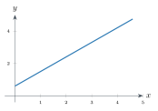
Fungsi linear, y = mx + c. Grafiknya garis lurus, dan perubahannya tetap. Contohnya kelandaian jalan, atau biaya yang naik sekian rupiah per meter kubik.
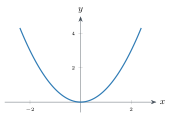
Fungsi kuadrat, y = ax² + bx + c. Grafiknya parabola. Inilah bentuk kabel jembatan gantung, lintasan air memancar, dan lendutan balok yang tadi kita lihat.
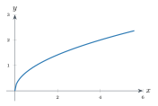
Fungsi akar, y = √x. Naik cepat di awal lalu melambat. Kecepatan air yang keluar dari bendungan mengikuti pola ini.
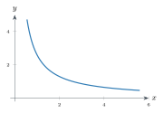
Fungsi kebalikan, y = k ⁄ x. Makin besar yang satu, makin kecil yang lain. Misalnya waktu pengerjaan terhadap jumlah pekerja.
Mengenali bentuk ini berguna sekali di lapangan.
Begitu melihat sebaran data hasil pengukuran, Anda sudah punya dugaan rumus mana yang cocok untuk memodelkannya.
Bagian enam
Menggeser dan mengubah grafik
Ada satu keterampilan yang sangat menghemat waktu: mengubah grafik yang sudah dikenal, tanpa menghitung ulang dari awal.
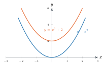
Menambahkan angka di luar rumus menggeser grafik ke atas.
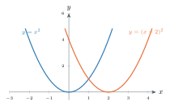
Mengurangkan angka di dalam kurung menggeser grafik ke kanan. Arahnya memang terasa terbalik, dan itu sumber kekeliruan yang sering terjadi.
Cara mengingatnya begini. Pada y = (x − 2)², supaya isi kurungnya bernilai nol, x harus bernilai 2.
Titik terendahnya berpindah ke x = 2. Jadi grafiknya bergeser ke kanan.
Pergeseran seperti ini bukan sekadar latihan.
Ketika Anda mengubah titik acuan pengukuran, misalnya memindahkan patok nol dari ujung balok ke tengahnya, rumusnya bergeser persis seperti itu.
Bagian tujuh
Ketika satu rumus tidak cukup
Terakhir, satu bentuk yang khas sekali di teknik sipil.
Kadang satu rumus tidak cukup untuk menggambarkan keseluruhan keadaan.
Bayangkan tarif air bersih. Untuk sepuluh meter kubik pertama, harganya sekian per meter kubik. Lewat dari itu, harganya naik.
Satu rumus tidak bisa menampung keduanya.
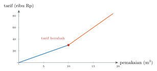
Fungsi seperti ini disebut fungsi potongan: satu rumus untuk satu selang, rumus lain untuk selang berikutnya.
Penulisannya memakai kurung kurawal:
30 + 6(x − 10), untuk x > 10
Bentuk ini muncul di mana-mana: beban yang berbeda pada bentang yang berbeda, tahapan pengecoran, tarif progresif, bahkan perilaku baja sebelum dan sesudah meleleh.
Jadi jangan terkejut kalau nanti sering bertemu.
Penutup
Yang perlu melekat
Fungsi adalah aturan yang memasangkan setiap masukan dengan tepat satu keluaran. Syarat itu ada supaya hasilnya bisa dipakai mengambil keputusan.
Daerah asal adalah nilai yang boleh dimasukkan. Dua sumber larangannya: aturan rumus, dan kenyataan benda yang sedang dihitung.
Grafik memperlihatkan pola yang tidak tampak dari rumus. Uji garis tegak membedakan mana yang fungsi dan mana yang bukan.
Untuk minggu depan, kerjakan latihan pada bab fungsi di buku pegangan, terutama soal tentang daerah asal.
Bacalah juga bab berikutnya: trigonometri, yang akan kita pakai untuk menguraikan gaya pada struktur.
Dan satu pesan yang akan saya ulang sepanjang semester:
jangan hanya membaca penyelesaiannya. Kerjakan sendiri, dengan tangan, di kertas.